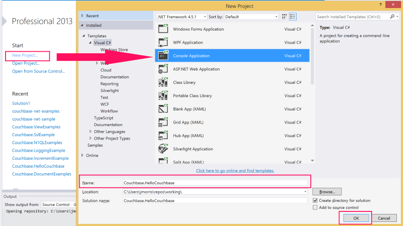
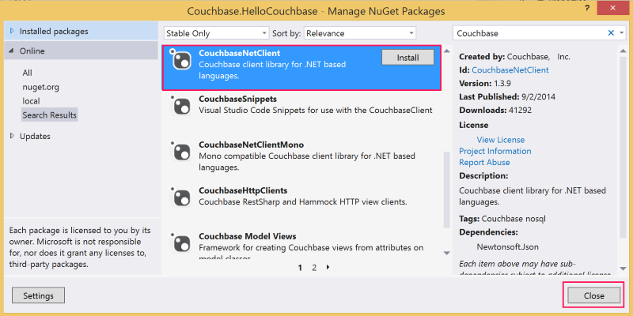

Hello Couchbase example
This topic shows how to create a simple “Hello World” application using the SDK. It's a quick 5-minute introduction to the Couchbase .NET SDK that just covers the basics and doesn’t go over advanced features of the client.
Before starting this tutorial make sure you are comfortable creating a Visual Studio project.
Prerequisites
To complete the “Hello World” tutorial, you need the following prerequisites installed:
- Microsoft Visual Studio 2013 or later
- Microsoft .NET Framework 4.5 or later
- Couchbase Server 2.5 or later installed locally (localhost/127.0.0.1)
- A Couchbase bucket called default installed
Tutorial
This tutorial creates a simple console application using Visual Studio that illustrates the most basic usage of the Couchbase .NET SDK.
To begin, open Visual Studio and create a new Console Application Project called Couchbase.HelloCouchbase:

This creates a simple executable with a main() method that you can use to try reading and writing from a Couchbase Cluster.
Next, use the NuGet Package Manager to reference the Couchbase .NET SDK and its dependencies:
At this point, you should be ready to go. Add a Cluster object, which represents a factory and resource manager for Couchbase buckets. This is added to the Program.cs file that was added automatically by Visual Studio when the project was created:
internal class Program
{
private static readonly Cluster Cluster = new Cluster();
private static void Main(string[] args)
{
using (var bucket = Cluster.OpenBucket())
{
}
}
}
The default OpenBucket() overload with no parameters opens the default bucket. Additionally, because the default constructor is used to create the Cluster object, the app connects to the localhost (127.0.0.1) instance of Couchbase Server.
The CouchbaseBucket object (as well as the Cluster object) implements the dispose pattern. Because of this, the instance is wrapped in a using statement, which means that the internal resources allocated by the instance will be reclaimed as the bucket instance goes out of scope. Managing the lifetime or scope of these objects is critical to developing high-performing, robust applications with the .NET SDK.
Now that you have connected to a Couchbase bucket, you can create a document and add it to the database:
using (var bucket = Cluster.OpenBucket())
{
var document = new Document<dynamic>
{
Id = "Hello",
Content = new
{
name = "Couchbase"
}
};
var upsert = bucket.Upsert(document);
if (upsert.Success)
{
var get = bucket.GetDocument<dynamic>(document.Id);
document = get.Document;
var msg = string.Format("{0} {1}!", document.Id, document.Content.name);
Console.WriteLine(msg);
}
Console.Read();
}
First, the code creates a new Document object, types it as dynamic and provides an Id value. Then, it creates the actual value that will be stored as JSON in Couchbase and assigns it to the Content property. After the Document object is created, it uses the Upsert() method to store it into the database. Finally, it checks whether the operation was successful and if it is, does a GetDocument() operation to retrieve the document and formats a string with the Id of the document and the Name property from the Content field (the actual JSON document).
If you build and run this from Visual Studio, you should see the following message output:
Hello Couchbase!Congratulations, you have successfully created the Hello Couchbase Tutorial! The full source can be found on GitHub.